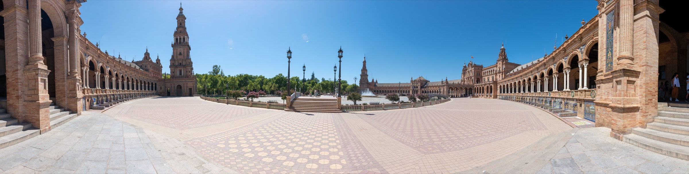
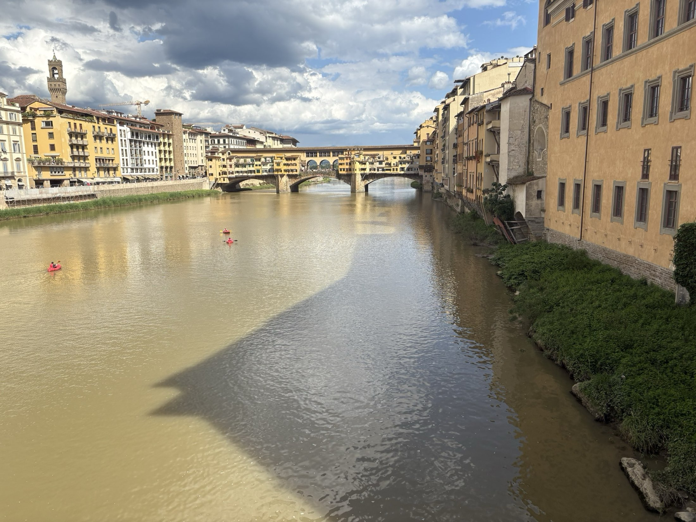

Wall art
Eligible photographs show available formats, crop previews, finishes, and current pricing before you decide.

Places, light, and the moment between
The Louvre, Paris
Selected work
Travel, architecture, coastlines, and lived-in spaces—observed patiently and presented without getting between you and the image.
From discovery to use
Each photograph can carry its verified place, collection, orientation, and availability without taking attention away from the image.
Eligible photographs show available formats, crop previews, finishes, and current pricing before you decide.
Buying a print and licensing an image are different. Each photograph can guide you to the right request.
Country, region, city, year, and a photographer's note provide useful provenance while sensitive exact coordinates remain private.

SeriesSpainPlaza de Espana, Seville
SeriesFranceThe Louvre, Paris

SeriesItalyFlorence